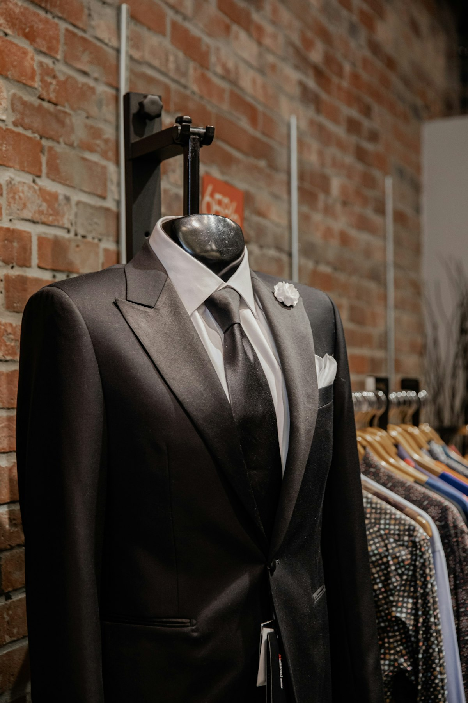
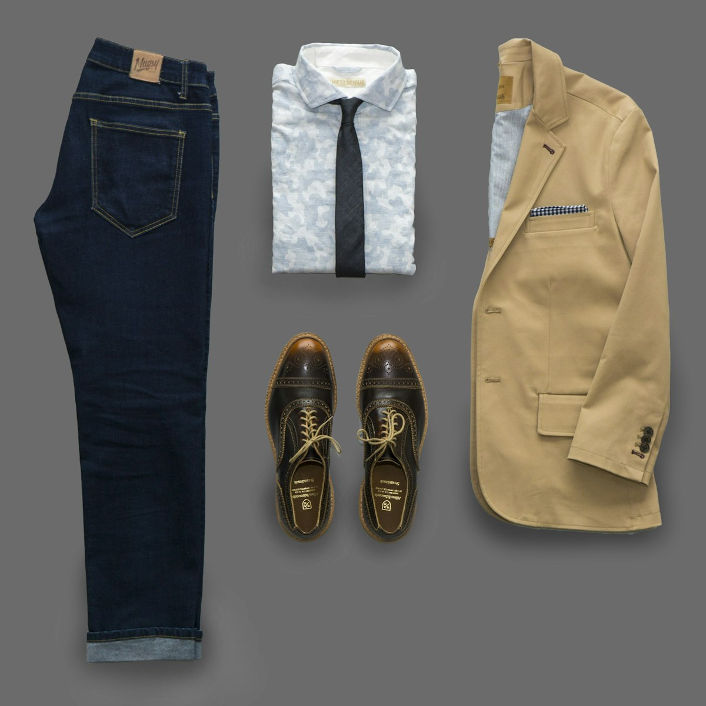
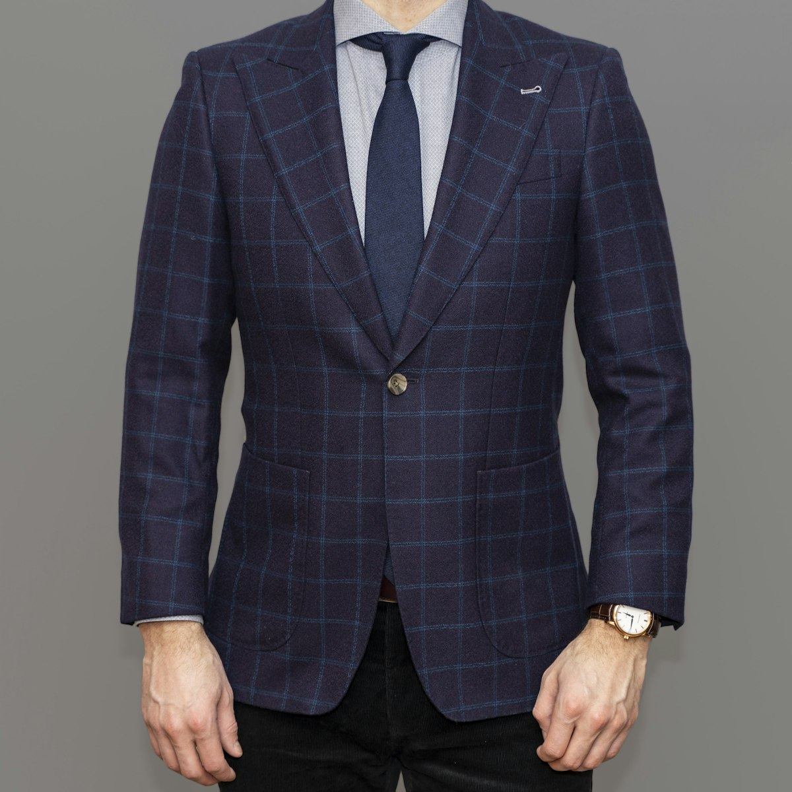

The Quintessence of Bespoke Herringbone Suiting.
Every bespoke suit begins with over forty individual physiological measurements, hand-drafted paper patterns, and pure British wool woven on historic Scottish looms. Experience perfection cut specifically for your posture.

The Geometry of Flawless Proportion
We reject the disposable compromises of fast fashion. Our suiting architecture celebrates durability, natural drape, and timeless silhouette.

Cloth SelectionHistoric Scottish Millings
Sourced from the Outer Hebrides and Yorkshire dales, our virgin wools possess natural breathability, rain resistance, and rich texture.

Precision DraftBespoke Paper Patterns
Unlike made-to-measure alterations, your suit is cut from an original bespoke paper pattern drafted from scratch by our master cutter.
Chalk & Hand-Shear Work
Cloth is meticulously aligned along the broken V-twill of the herringbone weave before shears glide through forty layers of structural canvas.
Signature Bespoke Commissions
Hand-canvassed garments designed to accompany you through boardrooms, evening galas, and brisk autumn streets.
The Mercer Two-Piece
Full floating horsehair canvas, hand-padded roped shoulders, horn buttons, and functional buttonhole surgeon cuffs.
Double-Breasted Blazer
Bold 6x2 button stance with dramatic peaked lapels cut in a charcoal and dark navy herringbone wool twill.
The Grand Ulster Overcoat
Heavyweight 24oz Donegal tweed overcoat featuring a deep inverted pleat back, belted waist, and storm collar.
The Bespoke Fitting Journey
From initial consultation to final delivery, our three-fitting sequence guarantees a flawless silhouette.
Anatomical Measures
We assess shoulder slope, spinal curvature, and natural stance, recording 40+ precise body metrics.
Baste Fitting
A temporary garment held by white baste stitching is tried on to sculpt shoulder slope, pitch, and balance.
Forward Fitting
Pockets, canvas, and facings are installed; lapel roll and trouser break are calibrated to your posture.
Final Hand Finish
Buttonholes are hand-sewn with silk gimp and the finished garment undergoes steam blocking before collection.

Milward Needles & Hand-Padded Canvas
Behind the exterior wool lies the floating canvas—a complex internal structure of horsehair, camel hair, and linen canvas that is never glued or fused with plastic adhesives.
Over months of wear, body warmth shapes this canvas directly to the contours of your chest and shoulders, creating a garment that fits more comfortably and drapes more gracefully with each passing season.
Learn About Our CraftRefined By Discerning Gentlemen
"The herringbone sports jacket created for me by Herringbone Fit is the single best piece in my wardrobe. The shoulder roping and waist drape are immaculate."
Charles BeaumontArchitect & Collector, Soho
"I have commissioned suits on Savile Row and in Naples. The attention to posture balance here at Mercer Street matches the best houses in Mayfair."
Julian VancePartner, Private Equity Group
"The bespoke overcoat is an absolute fortress against Manhattan winter winds. Warm, impossibly stylish, and built to last thirty years."
Arthur DaviesConductor & Artistic Director
Frequently Asked Questions
A full bespoke commission typically requires 8 to 10 weeks and includes three private fittings (baste, forward, and final). For clients with urgent schedules, expedited commissions can be arranged upon consultation.
Made-to-measure alters an existing pre-made factory pattern. Bespoke drafts an entirely unique paper pattern constructed from scratch for your individual posture, featuring floating hand-stitched horsehair canvas and full hand-finishing.
Our private fitting rooms and cutting salon are located at 181 Mercer Street, New York, NY 10012, United States. You can reach our atelier desk by calling +1-888-777-5845.
From the Master Cutter’s Desk
 Weave Geometry
Weave Geometry
The Anatomy of the Herringbone Weave: Structural Stability
An in-depth analysis into broken twill yarn geometry, warp and weft tension, and why herringbone drape resists wrinkling.
Read Treatise → Internal Craft
Internal Craft
Full Canvas vs Fused Construction: Anatomy of Suit Longevity
Why floating horsehair chest canvas molds to body heat over decades while synthetic chemical adhesive glues bubble and fail.
Read Treatise → Cloth Sourcing
Cloth Sourcing
The Wool Weight Matrix: Ounce Classification & Seasonal Drape
An exhaustive guide to woolen weights from 9oz tropical summer plains to 24oz heavyweight Scottish winter tweeds.
Read Treatise →Commission Your Bespoke Garment
Join us at our Mercer Street fitting salon. Explore hundreds of historic cloth bunches and experience the luxury of a garment made exclusively for you.
Schedule Your Appointment